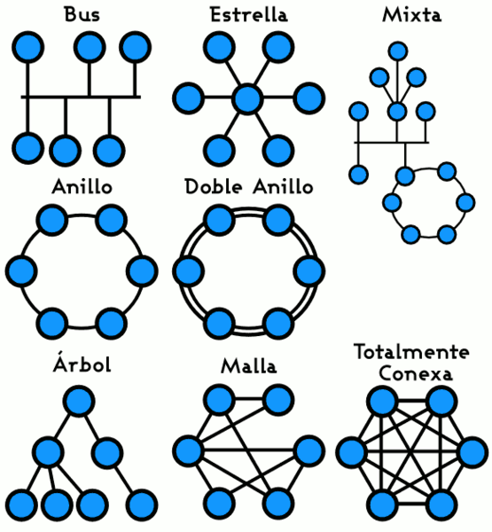
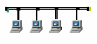
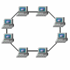
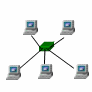

3.2. Topología de redes
La topología de una red es una de las primeras decisiones que se toman a la hora de responder a la pregunta ¿cómo vamos a conectar los ordenadores?
Distintos factores nos harán decantarnos por unas u otras topologías. Por ejemplo seguridad, control ante posibles fallos, coste o velocidad. Estos son algunos tipos de topología:
|  |
| Imagen en Wikipedia de Yearofthedragon con licencia CC |
Existen tres tipos considerados básicos para montar una red.
|
Bus
Los nodos están conectados por un único canal de comunicaciones llamado bus, al cual se conectan también los diferentes dispositivos. De esta forma, todos los dispositivos comparten el mismo canal para comunicarse entre sí de forma que todos los nodos ven los mensajes, pero no todos los aceptan. Su principal ventaja es la facilidad de implementación, pero tiene desventajas como la limitación por longitud y las pérdida en la transmisión. |

|
|
Anillo
Los nodos están unidos unos con otros formando un círculo por medio de un cable común, estando unidos el último nodo con el primero para cerrar el anillo. Las señales circulan en un sólo sentido alrededor del anillo de modo que cada nodo tiene un receptor que examina la información y un transmisor que la envía. La desventaja del anillo es que si se rompe una conexión, la red deja de funcionar. Esto se soluciona haciendo redes de doble anillo, en las cuales si uno falla, la información pasa al otro. |

|
|
Estrella
Los nodos están conectados a un ordenador central o hub de modo que lo mensajes de cada nodo pasan directamente al servidor y éste decide hacia dónde enviarlos. La ventaja principal es que aunque falle algún nodo, el resto no se verá afectado. Sin embargo, es más costosa ya que el cable es único de nodo a servidor. |

|
|
Img 16, 17 y 18. Topologías básicas
Imágenes de producción propia
|
Importante
La topología de una red define su estructura. Pueden establecerse la topología física, que es la forma en que se conectan los terminales, dispositivos y recursos de la red, y la topología lógica, que es la forma de acceso a la información de la red. La elección de una topología u otra influye en gran medida en el funcionamiento y configuración de la red.
Pregunta Verdadero-Falso
Acabas de ver las distintas topologías de redes que se pueden dar. Contesta a las siguientes preguntas fijándote en los contenidos de este punto.
Retroalimentación
Falso
La topología define la estructura de la red desde el punto de vista físico, estableciendo la forma de conexión de los equipos, como desde el lógico, estableciendo la forma de acceso a la información.
Retroalimentación
Verdadero
La topología de bus se basa en el uso de un canal único.
Retroalimentación
Verdadero
La red en anillo doble permite que, si un nodo falla, la información pase al otro anillo evitando así la ruptura de la red.
Retroalimentación
Falso
Este tipo de red tiene una topología de estrella.
Reflexión
Las típicas redes caseras ¿a qué tipo se asemeja más?